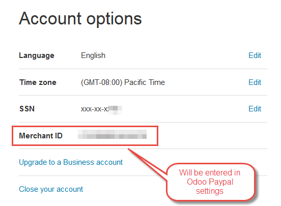

The "Paypal Payment Acquirer" module allows you to accept payments via paypal, for your sales orders, invoices, or online orders. As paypal accepts payments through credit cards (VISA, Mastercard, …), you will be able to process most payment methods.
Paypal support two modes:
- Paypal Merchant Account: the user is redirected to paypal to do the payment (either with a credit card or a paypal account)
- PayPal PayFlow Pro (S2S, Server 2 Server): the user is not redirected to paypal and the payment can be done in the background. This method is mostly used for subscription businesses where you need to charge your customers periodically.
As of today, Odoo only support the normal Paypal Merchant Account.
Configuration
Install the "PayPal Payment Acquirer" module
Start by installing the PayPal Payment Acquirer module.
Once the module is installed, you should see a new payment acquirer in the Setting application, menu "Payment Acquirers".

By default, Paypal is configured to work in a test environment, out-of-the-box. It means you can already test the full order to payment flow with the paypal sandbox, without having to configure the next steps.
Creating and configuring a PayPal merchant account
Create a basic Paypal account
- Existing or newly created Personal Paypal account can be used.
- Or upgrade your account to Business account (merchant) if needed

Paypal Account Summary page
Paypal Configuration
Access "Seller preferences" menu from PayPal website

Access "Website preferences" and configure Auto Return
- Database name: yourcompany
- Website URL: https://yourcompany.odoo.com/
- Return URL: https://yourcompany.odoo.com/shop/confirmation


These settings will redirect your buyer to your web confirmation page.

Access and edit Instant payment notifications settings - IPN


Example
- Database name: "yourcompany"
- Website URL: https://yourcompany.odoo.com/
- Notification URL: https://yourcompany.odoo.com/payment/paypal/ipn/
Tip
verify that your Notify URL uses the correct protocol (HTTP / HTTPS)
Set the encoding to UTF-8 from the menu


Record your Merchant Paypal ID (personal or business account both will have it) it will be entered in Odoo backend .
If you want your customers to be able to pay through Paypal while not having a Paypal account- following setting "Paypal Account Optional" needs to be set to ON. All users will be able to choose Credit/debit card payment option - Paypal account not required.

Setup your Paypal Payment Acquirer account credentials in Odoo
- Paypal Email ID: your paypal account email address
- Paypal Merchant ID: ID retrieved at previous step
Troubleshooting
If your eCommerce customer gets this Error Message after completing Paypal payment instead of being redirected to your database:

Verify the Auto Return URL you have configured in Paypal is correct and pointing to your own domain name.
You can either:
- Enter the correct return URL and activate Auto Return
- or deactivate Auto Return and delete URL (this method will have an extra click through Paypal in order to return to your ecommerce page.)